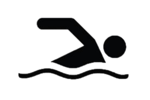
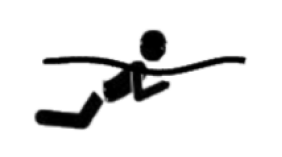
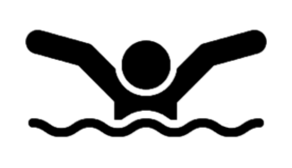

Natação
Os estilos de nado
A natação é um dos esportes mais completos, por exigir movimento do corpo todo,
a combinação destes movimentos possibilita maneiras diferentes de se locomover pela água,
essas variações deram início a diferentes estilos de nado. Os estilos de natação foram criados em épocas diferentes.
Primeiro foi inventado o nado peito, depois surgiu o nado de costas, mais tarde veio o estilo livre,
e por último o nado borboleta, uma variação do nado peito.
A natação conta com quatro estilos de nado: crawl, costas, peito e borboleta.
Ler mais

NADO LIVRE (CRAWL)
No nado crawl, a parte frontal do corpo fica virada para baixo,
para o fundo da piscina, as pernas ficam esticadas, semiflexionadas,
e os pés estendidos se movimentam para cima e para baixo,
alternando rapidamente entre direita e esquerda, em movimentos curtos,
o movimento dos braços também se alternam para puxar a água,
de forma que um comece a puxar a água imediatamente antes que o outro comece a fazer o mesmo ciclo.
A respiração é feita virando a cabeça para o lado do braço que está fora da água.
É o nado mais simples e o mais comum.
Ler mais
NADO COSTAS (backstroke)
No nado costas, a parte frontal do corpo fica para cima,
para fora da água. Os movimentos são parecidos com os do crawl, mas invertidos.
Os braços também se movem de forma alternada entre direito e esquerdo, sendo ora dentro d'água,
e ora fora, fazendo uma espécie de rotação e passando junto à orelha, com a palma da mão virada para fora.
Em seu movimento até o quadril, o braço empurra a água e impulsiona o corpo na direção contrária.
É o estilo mais fácil, já que a cabeça fica para fora da água facilitando a respiração.
Ler mais

NADO PEITO (breaststroke)
A parte frontal do corpo fica para baixo,
o movimento é executado com o corpo e os braços estendidos,
as palmas das mãos voltadas para fora e o rosto dentro d'água.
As pernas são trazidas junto do corpo, com joelhos dobrados e abertos,
enquanto os braços se abrem e recolhem à altura do peito. Em seguida,
as pernas são impelidas para traz, para impulsionarem o nadador,
em um movimento parecido com o de uma rã. Ao mesmo tempo, os braços são estendidos para frente.
A inspiração do ar é feita no final da puxada do braço,
quando se ergue a cabeça para fora da água, a ação da perna acontece de forma simultânea,
é o estilo mais lento e técnico, exigi muita coordenação e técnica do praticante.
Ler mais

NADO BORBOLETA (butterfly)
A parte frontal do corpo fica voltada para baixo,
para o fundo da piscina. O movimento começa com os braços estendidos à frente do corpo,
o atleta puxa os braços submersos para junto do corpo, subindo a cabeça para respirar,
em seguida tira os braços abertos da água e junta os dois novamente à frente da cabeça.
Enquanto isso, as pernas fazem o movimento de ondulação, para cima e para baixo, juntas,
movimento conhecido como golfinhada, por ter alguma semelhança com o movimento que fazem os golfinhos.
Os 2 braços e as 2 pernas estão sincronizados o tempo todo e, a cada 2 pernadas acontece 1 braçada.
A respiração pode ser feita a cada duas ou cinco braçadas. O nado borboleta é o mais pesado de ser realizado,
por exigir muito da musculatura do corpo, especialmente dos braços, exige força para empurrar a água e,
ao mesmo tempo, flexibilidade para enfrentar a resistência dela.
Ler mais